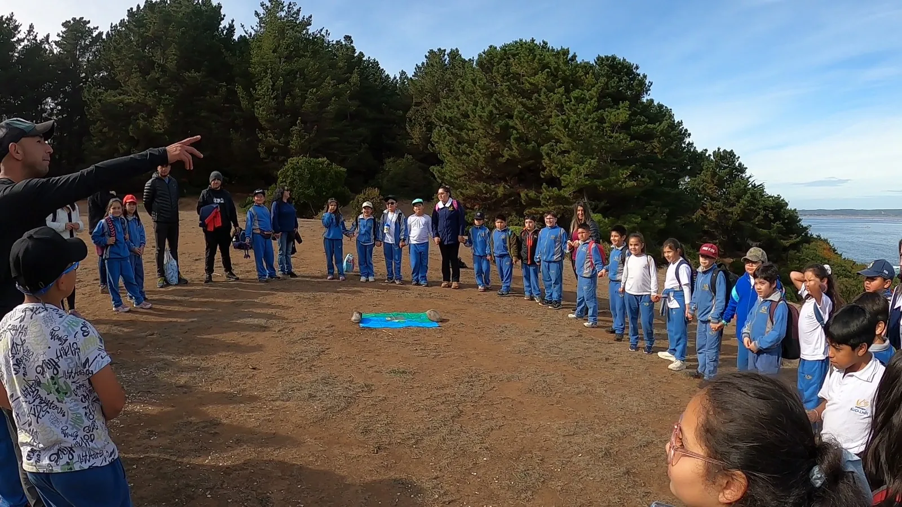

Galería · Página 2
Más experiencias en territorio.
Registros de monitoreo, aprendizaje y observación de la biodiversidad.
Nuestro trabajo
Exploración, análisis y aprendizaje.
Cada imagen reúne trabajo técnico, curiosidad científica y vínculos construidos en torno al ambiente.
Próximo proyecto
Llevemos el trabajo al territorio.
Conversemos sobre la experiencia técnica o educativa que necesitas desarrollar.